How Nordstrom Utilizes Human Intelligence to Blend Brick-and-mortar with Online Commerce
Erin Shellman PhD - Data Scientist
David Von Lehman - Developer
How Nordstrom Utilizes Human Intelligence to Blend Brick-and-mortar with Online Commerce
Erin Shellman PhD - Data Scientist
David Von Lehman - Developer
The Nordstrom Data Lab Mission
Delighting customers through data-driven products.

Nordstrom Data Lab Timeline
Multidisciplinary Team
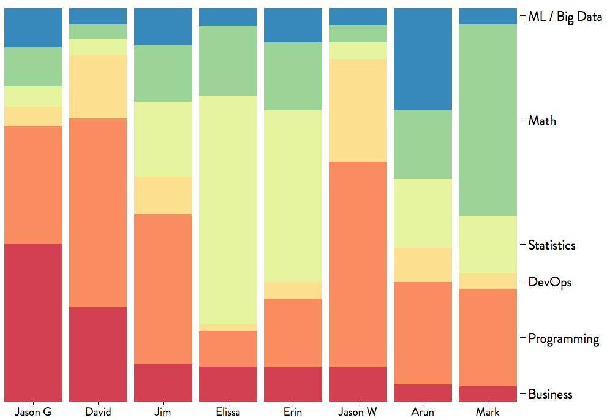Our Powers Combined

The Nordstrom Data Ecosystem
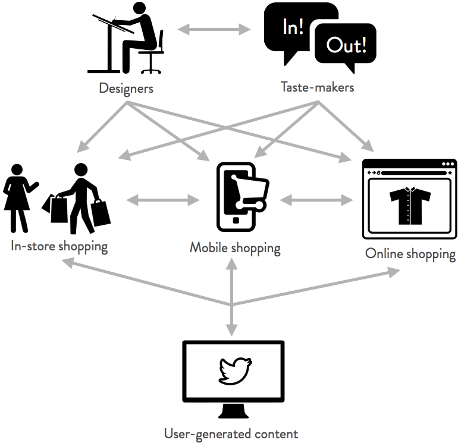There has been a shift in our thinking. A part of our resources are now more human curated...
our engineers evolve the algorithm, and humans help us see if a suggested change is really an improvement.
- Scott Huffman
Engineering Director at Google
EASE
Emulate
Automate
Scale
Evaluate
Three Applications of EASE
- Our Stylists Suggest
- Recommendo API
- My Color Palette
Stylists at Nordstrom
Our Stylists Suggest
Our Stylists Suggest is a recommendation engine that analyzes transactions in Nordstrom stores that were facilitated by a personal stylist.
How to Emulate a stylist?
Stylist-based Market Basket Analysis

How to Emulate a stylist?
Stylist-based Market Basket Analysis

How to Emulate a stylist?
Stylist-based Market Basket Analysis

How to Emulate a stylist?
Stylist-based Market Basket Analysis
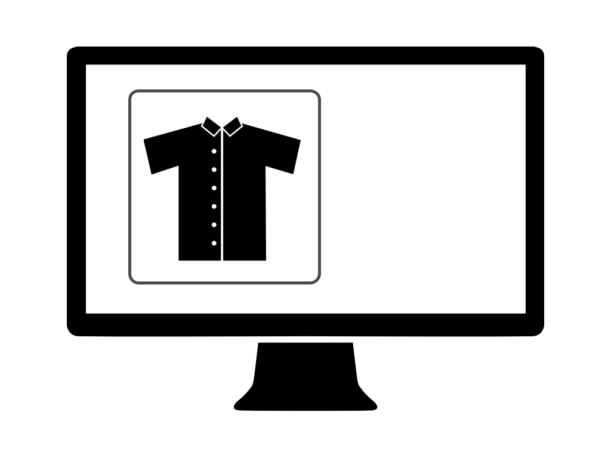How to Emulate a stylist?
Stylist-based Market Basket Analysis
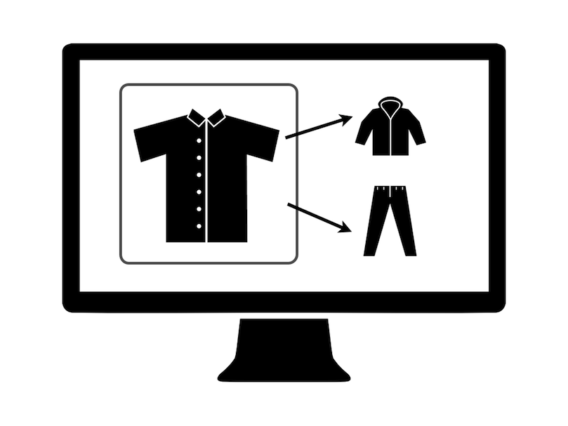Evaluate
Test internally with a light-weight prototype
Compare to incumbent


Automate

Evaluate
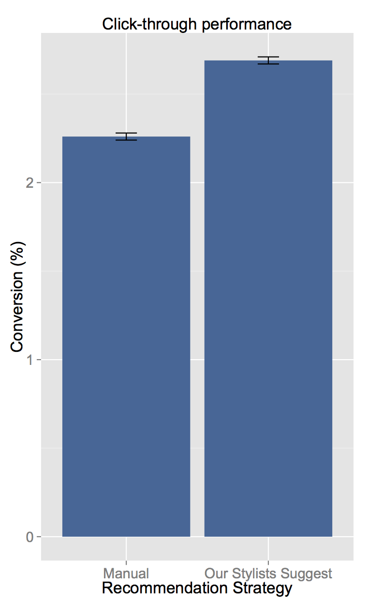 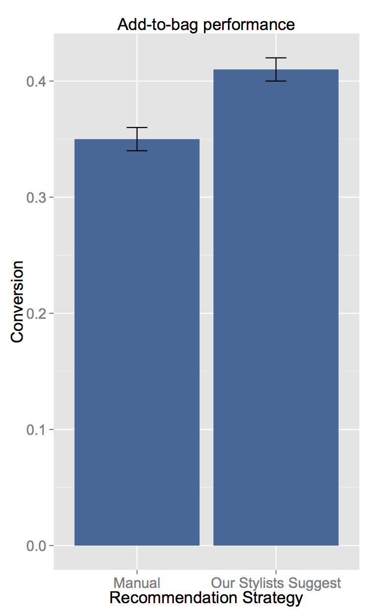
Scaling Recommendations
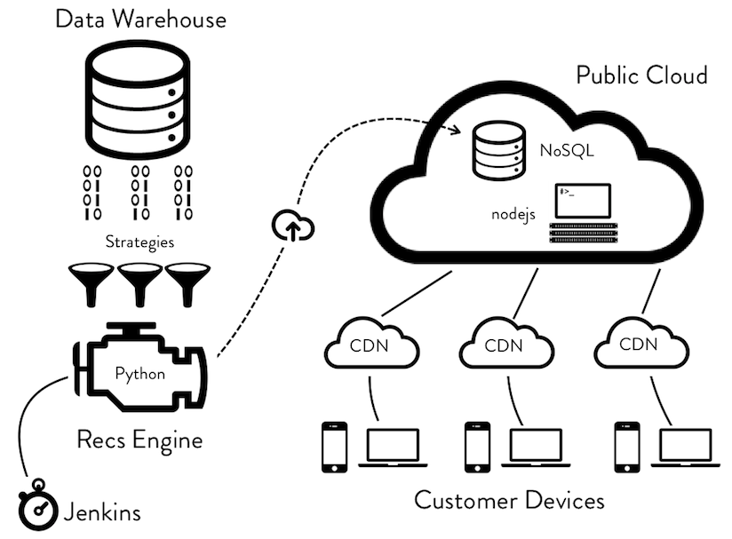Lessons Learned
- Quick prototyping is the fastest way to internal advocacy.
- We don't always need a complicated solution.
- Play to your differentiating strengths.
- Bias towards impact.
An Exploration of Color
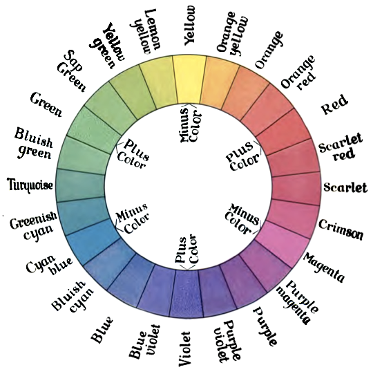Pixels as Data
Photo Studio Expertise
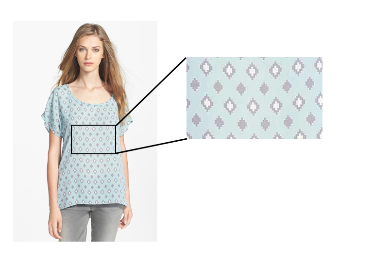Color Extraction
Color Extraction
Color Extraction
Color Extraction
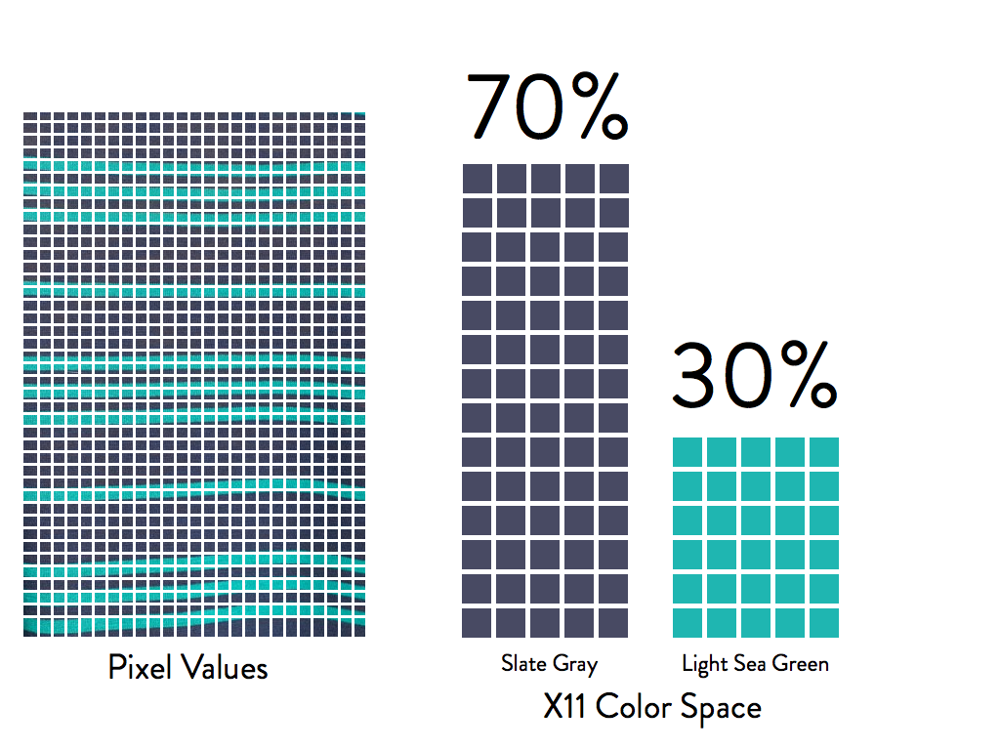X11 Color Space
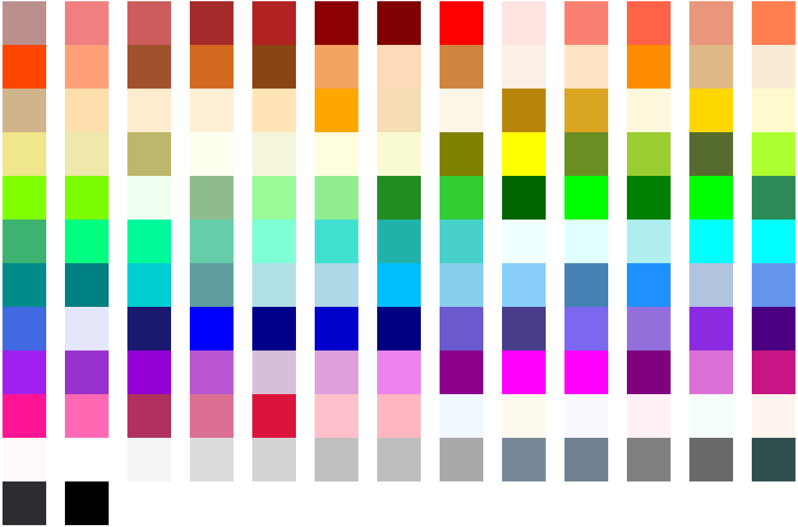Color Scoring
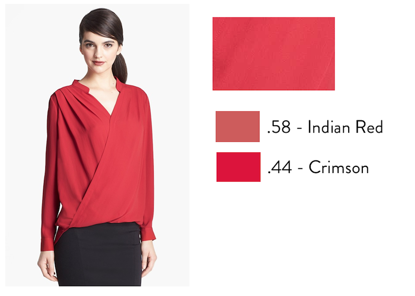Color Patterns
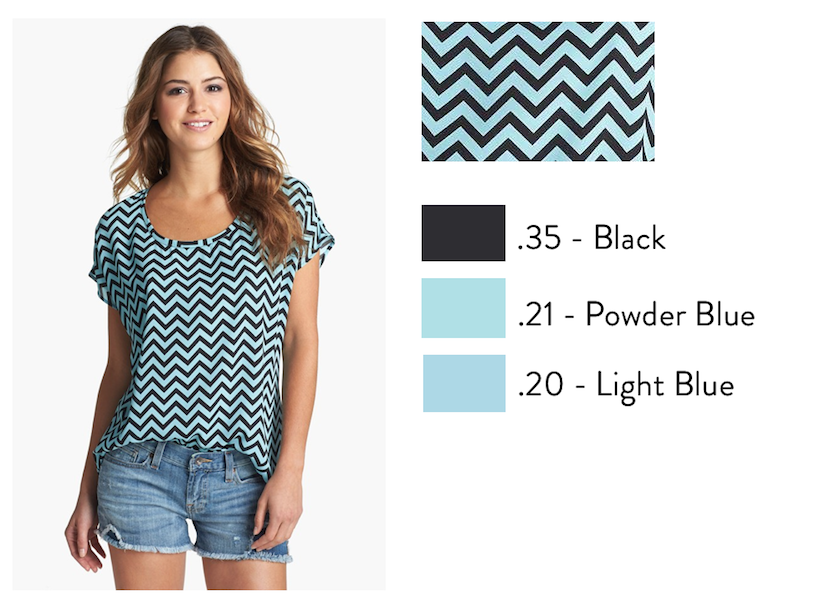Colors of the Season
Swimwear Trends by City
Top Products by Color Score
Precise Color Match
Pantone Bump

Customer Color Fingerprints
Empower our Customers with Data
What are the colors I buy?
What are the colors I should try?
Wrap Up
- It Takes a Village
- Experience >> Data
- KISS
- Ship It!
- EASE!!
 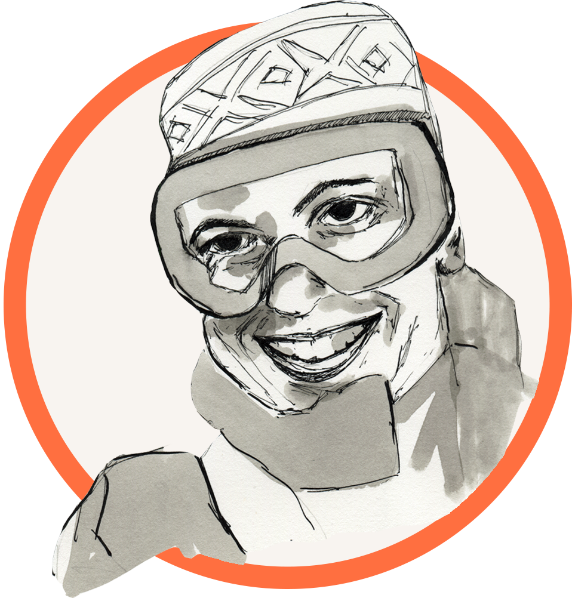
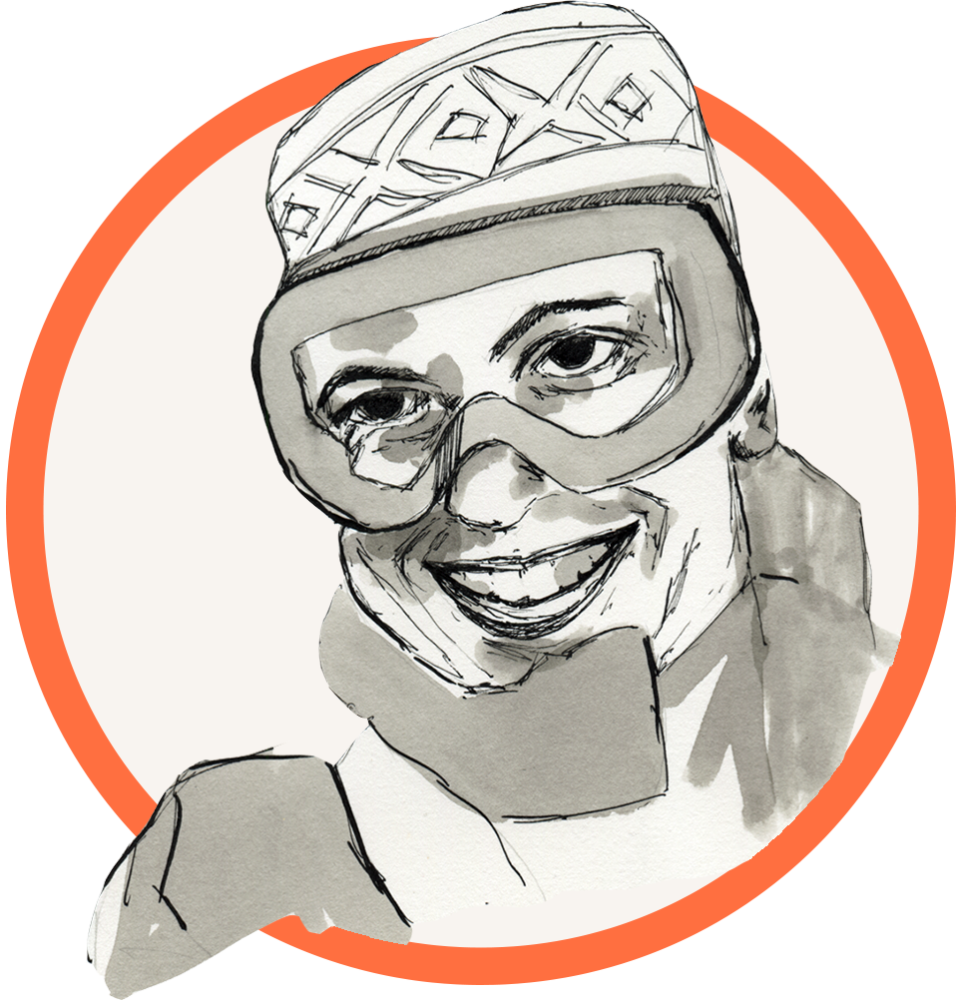
Acknowledgements
Sara Hogenson, Paul Payne and the Nordstrom Innovation Lab
Scott Jones, Prashanth Nair, Abid Saifee and the Advanced Analytics, Personalization, and Mobile Teams, @nordysanda
Thank You!
Questions? Ask ds@nordstrom.com
This Presentation
nordstrom.github.io/stratanyc
Nordstrom Technology is Hiring
techcareers.nordstrom.com
Nordstrom Shoebox
www.nordstromshoebox.com
Attributions
- Fisheye zoom visualization inspired by NY Times Fashion Week Editor's Picks - http://nyti.ms/14Rsyfj
- Database designed by Sergey Shmidt from The Noun Project
- Engine designed by Ben Johnson from The Noun Project
- Cloud Upload designed by Adam Whitcroft from The Noun Project
- Cloud designed by Pieter J. Smits from The Noun Project
- iPhone from The Noun Project
- Laptop from The Noun Project
- Servers designed by Ken Hawkins from The Noun Project
- Funnel designed by Patrick N. from The Noun Project
- Timer designed by Vladimir from The Noun Project